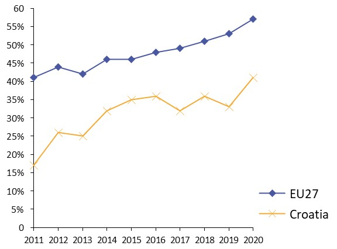
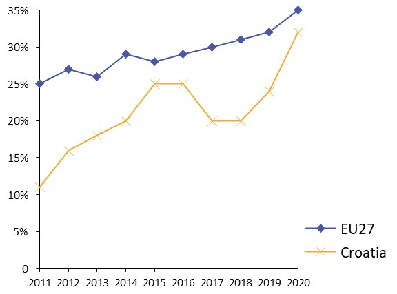
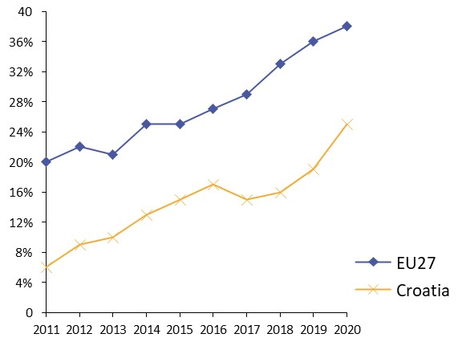
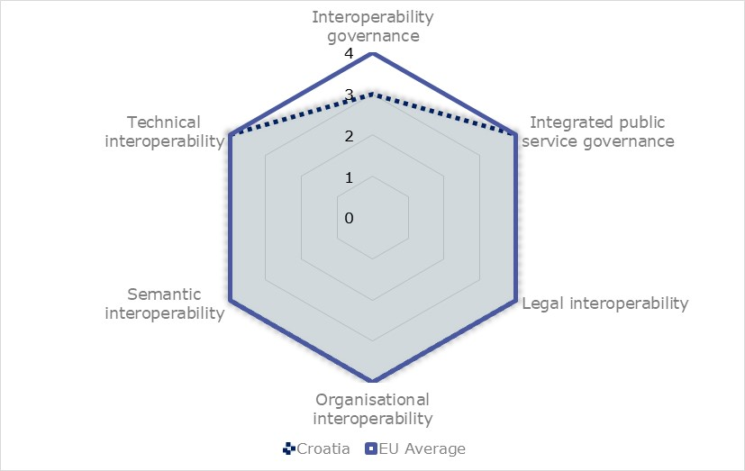
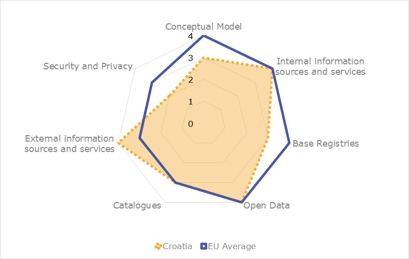
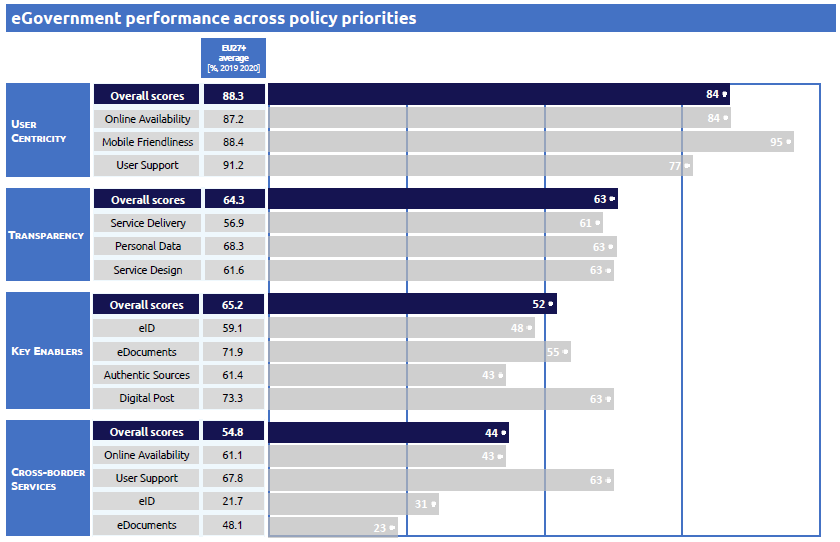

ISA2
Digital Public Administration factsheet 2021
Croatia
2 Digital Public Administration Highlights 11
3 Digital Public Administration Political Communications 13
4 Digital Public Administration Legislation 22
5 Digital Public Administration Governance 28
6 Digital Public Administration Infrastructure 36
7 Cross-border Digital Public Administration Services for Citizens and Businesses 51
Please note that the data collection exercise for the update of the 2021 edition of the Digital Public Administration factsheets took place between March and June 2021. Therefore, the information contained in this document reflects this specific timeframe.

Country
Profile
1
Population: 4 067 206 inhabitants (2019)
GDP at market prices: 49 283.3 million Euros (2020)
GDP per inhabitant in PPS (Purchasing Power Standard EU 27=100): 64 (2020)
GDP growth rate: -8.0% (2020)
Inflation rate: 0% (2020)
Unemployment rate: 7.5% (2020)
General government gross debt (Percentage of GDP): 88.7% (2020)
General government deficit/surplus (Percentage of GDP): -7.4% (2020)
Area: 56.5 km²
Capital city: Zagreb
Official EU language: Croatian
Currency: Croatian Kuna HRK
Source: Eurostat (last update: 22 June 2021)
The following graphs present data for the latest Generic Information Society Indicators for Croatia compared to the EU average. Statistical indicators in this section reflect those of Eurostat at the time the Edition is being prepared.
Percentage of individuals using the internet for interacting with public authorities in Croatia | Percentage of individuals using the internet for obtaining information from public authorities in Croatia |
 | |
Percentage of individuals using the internet for downloading official forms from public authorities in Croatia | Percentage of individuals using the internet for sending filled forms to public authorities in Croatia |
 |  |
In 2017, the European Commission published the European Interoperability Framework (EIF) to give specific guidance on how to set up interoperable digital public services through a set of 47 recommendations. The picture below represents the three pillars of the EIF around which the EIF Monitoring Mechanism was built to evaluate the level of implementation of the EIF within the Member States. It is based on a set of 71 Key Performance Indicators (KPIs) clustered within the three main pillars of the EIF (Principles, Layers and Conceptual model), outlined below.

Source: European Interoperability Framework Monitoring Mechanism 2020
For each of the three pillars, a different scoreboard was created to breakdown the results into their main thematic areas (i.e. the 12 principles of interoperability, the interoperability layers and the components of the conceptual model). The thematic areas are evaluated on a scale from one to four, where one means a lower level of implementation and 4 means a higher level of implementation. The graphs below show the result of the second EIF Monitoring Mechanism data collection exercise for Croatia in 2020.

Source: European Interoperability Framework Monitoring Mechanism 2020
Croatia’s results in Scoreboard 1 show an overall medium to good implementation of the EIF Principles, scoring at the European average for most of the Principles. Areas of improvement are concentrated in the Principles 5 (Technological neutrality and data portability), 6 (User-centricity) and 10 (Administrative simplification), for which the scores of 2 and 3 show a medium performance in the implementation of corresponding recommendations. Indeed, the country should not impose any technological solutions on citizens, businesses and other administrations that are technology-specific or disproportionate to their real needs (Principle 5 – Recommendation 08). In addition, Croatian public administrations should foster the use of multiple channels to provide public services, so as to ensure that users can select the channel that best suits their needs (Principle 6 – Recommendation 10) and ask users of European public services once-only and relevant-only information (Principle 6 – Recommendation 13). Lastly, Croatia should simplify its processes and use digital channels whenever appropriate for the delivery of public services, to respond promptly and with high quality to users’ requests and reduce the administrative burden on public administrations, businesses and citizens (Principle 10 – Recommendation 17).

Source: European Interoperability Framework Monitoring Mechanism 2020
The Croatian results for the implementation of interoperability layers assessed for Scoreboard 2 show an overall good performance with mostly scores of 4. The only potential area of improvement to enhance the country’s implementation of the recommendations under Scoreboard 2 is concentrated on interoperability governance, where Croatia scored 3. The lower score is due to the lower score for Recommendation 24, whereby Croatia should improve its participation in standardisation work relevant to citizens’ or businesses’ needs, to ensure that their requirements are met.

Source: European Interoperability Framework Monitoring Mechanism 2020
Croatia’s scores assessing the Conceptual Model in Scoreboard 3 show a medium performance in the implementation of recommendations associated with internal and external information sources and services and open data. However, to align with the European average, some improvements can be made in implementing recommendations related to the conceptual model itself, to base registries as well as in the area of security and privacy. Precisely, the lack of a common scheme for interconnecting loosely coupled service components and putting in place the necessary infrastructure for establishing and maintaining public services (Conceptual Model - Recommendation 35) hinders the overall Croatian score on the conceptual model. In addition, Croatia could improve the implementation of the recommendations related to Security and Privacy, by identifying measures for the provision of each public service according to risk management plans (Recommendation 46) and to foster the use of trust services according to the Regulation on eID and Trust Services (Recommendation 47).
Additional information on Croatia’s results on the EIF Monitoring Mechanism is available online through interactive dashboards.
The graph below presents the main highlights of the latest eGovernment Benchmark Report, an assessment of eGovernment services in 36 countries: the 27 European Union Member States, as well as Iceland, Norway, Montenegro, the Republic of Serbia, Switzerland, Turkey, the United Kingdom, Albania and Macedonia (referred to as the EU27+).
The study evaluates online public services on four dimensions:
The 2021 report presents the biennial results, achieved over the past two years of measurement of all eight life events used to measure the above-mentioned key dimensions. More specifically, these life events are divided between six ‘Citizen life events’ (Career, Studying, Family life, measured in 2020, and Starting a small claim procedure, Moving, Owning a car, all measured in 2019) and two ‘Business life events’ (Business start-up, measured in 2020, and Regular business operations, measured in 2019).

Source: eGovernment Benchmark Report 2021 Country Factsheets

Digital Public Administration Highlights
2
Digital Public Administration Political Communications
For further progress of Croatian society and economy, it is necessary to encourage further investments in digital technologies, upgrade, improve and ensure interoperability of information systems aimed at facilitating business in the public and private sector. Furthermore, measures to limit physical contact due to the outbreak of the COVID-19 pandemic have further highlighted the importance of a modern digital infrastructure, guaranteeing wide internet access and the availability of digital services necessary for day-to-day activities. Thus, the digital transformation of the Croatian economy and society in the next ten years is planned as part of the National Development Strategy 2030 (NDS).
The National Plan for Recovery and Resilience defines the goals of the digital transformation of society and the economy of the Republic of Croatia: i) increase the efficiency and transparency of public sector bodies, ii) establish management and coordination structures for planning and implementation of digital transformation of society and public administration and iii) provide public administration the availability of tools and technologies needed to develop more economical and quality digital services tailored to the needs of their users.
Digital Public Administration Legislation
The decision on establishing cross-border interoperability of a mobile application for informing users on COVID-19 exposure (OJ 125/2020) provides a cross-border interoperability between identical mobile applications of the Member States of the European Union (EU) ensuring the timely exchange of digitally processed, pseudonymous personal data for the purpose of fast and accurate exchange of anonymous information.
Digital Public Administration Governance
The Central State Office for the Development of the Digital Society takes over tasks within the scope of the former Ministry of Administration. These tasks include the development of the State Administration Information System, establishment of information technology (IT) infrastructure in state administration bodies, connecting information system of state administration bodies through a single information and communication network, participation in the adoption and monitoring of the implementation of laws and other regulations in the field of application of information and communication technologies (ICT) in public administration, and many more.
In addition to the tasks assigned to it by the Act, the Central State Office for the Development of the Digital Society performs other tasks concerning cyber security, accessibility of websites and the central registry of state property.
Digital Public Administration Infrastructure
The National Shared Services Centre which presents government cloud IT infrastructure is in production status since 25 November 2019. The project goal is the integration of 300 institutions into the State Cloud by 2023. The SCC platform is based on Cloud Computing, which enables optimal use of available resources, and on the other hand, due to the size of the system, it enables significant savings in economies of scale. The platform offers three basic groups of services: Infrastructure as a service, Platform as a service and Software as a service. In doing so, the infrastructure as a service is used as an infrastructure for SaaS and PaaS services and as an infrastructure for hosted systems.

Digital Public Administration Political Communications
3
Berlin Declaration on Digital Society and Value-Based Digital Government
In December 2020, the Croatian government signed the Berlin Declaration on Digital Society and Value-Based Digital Government, thus re-affirming its commitment – together with other EU Member States – to foster digital transformation in order to allow citizens and businesses to harness the benefits and opportunities offered by modern digital technologies. The Declaration aims to contribute to a value-based digital transformation by addressing and strengthening digital participation and digital inclusion in European societies.
The signatories agreed to work together on the digital transformation of governments, promote fundamental rights and democratic values in the digital sphere, enhance social participation and inclusion, foster digital empowerment and digital literacy, increase trust through security in the digital sphere, strengthen Europe’s digital sovereignty and interoperability, create value-based, human-centred artificial intelligence (AI) systems for use in the public sector and foster resilience and sustainability.
Implementation Programme of the Central State Office for the Development of the Digital Society for the period 2021–2024
The Implementation Programme of the Central State Office for the Development of the Digital Society for the period 2021–2024 is a programme detailing activities aimed at the digitisation of all parts of society, and promoting a balanced and inclusive development of the digital society for citizens, economic operators and the public administration. In the coming period, the focus will be on activities related to: (i) improving the security and coordination of the digital society; (ii) developing public eServices; (iii) developing the State information infrastructure; (iv) improving the interoperability of information systems; (v) ensuring unique, permanent availability of public official documents and information of the Republic of Croatia; (vi) monitoring the implementation of the Law on Accessibility of Web Pages and Mobile Software Solutions of Public Sector Bodies; and (vii) promoting and improving the position of women in the digital world.
National Development Strategy 2030
The continuation of the digital transformation of the Croatian economy and society in the next ten years is also planned as part of the National Development Strategy 2030 (NDS). Namely, the transition to a sustainable and inclusive economic model based on the wider acceptance and use of digital and clean technologies is defined as a priority of public policies in the NDS. The NDS states that strategic digital capacities need to be strengthened and built by monitoring the development of digital services and digital transformation. Additionally, the further development of the State information infrastructure and the increased availability of interoperable digital public services to citizens and businesses are also seen as important. Finally, the development and construction of broadband infrastructure and electronic communication networks with large capacities enabling gigabit connectivity and capacity building, and the development of the digital competencies of employees in public administration and judiciary are also priorities.
Ministry of Justice and Administration Implementation Programme 2021–2024According to the Act on the Organisation and Jurisdiction of State Administration Bodies (OJ 85/2020) which entered into force on 23 July 2020, the Central State Office for the Development of the Digital Society takes over some tasks within the remit of the former Ministry of Administration.
To enable a smooth transition between the Ministries, the Implementation Programme 2021–2024 was adopted. The Implementation Programme is a short-term act of strategic planning related to the multi-annual budget prepared by the Ministry of Justice and Administration within 120 days of the formation of the new government. The programme refers to the mandate period, and describes priority measures and activities for implementing the goals set in the 2020 programme of the government of the Republic of Croatia, national development plans and other relevant acts of strategic planning of national importance.
During this mandate of the government of the Republic of Croatia, the Ministry of Justice and Administration continues with activities aimed at further strengthening the efficiency of the judiciary and public administration, and further preventing corruption, so that the judiciary and public administration meet the needs of citizens and economic operators. Timely decisions, new digital solutions, innovative mechanisms and work organisation should ensure the quality and continuity of the work of public administration and judicial bodies, and their constant availability to citizens.
Programme of the Croatian Government for the Period 2020–2024
The Programme for the period 2020–2024, developed by the government of the Republic of Croatia, represented a systematic and methodical overview of instruments the government used to achieve political stability, legal security, economic growth and social solidarity. As part of the Programme, efforts were made to achieve a functional and accessible public administration and further digitisation. Moreover, for the purpose of increasing the efficiency of institutions, measures included the simplification of rules and the acceleration of the work of the administration through the digitisation of all processes with a view to expanding eServices to citizens and businesses, interconnecting all State administration bodies and establishing a uniform manner of communication between citizens and State administration bodies.
One of the programme’s objectives relating to public administration was the accomplishment of the digitisation of public services. The plan involved establishing a Central Government Information System, the optimisation of resources, the centralised management of all information systems and services in one place, and the introduction and use of electronic identification (eID) for all citizens.
National Plan for Recovery and Resilience
The goals of the digital transition of the Croatian society and economy defined in the National Plan for Recovery and Resilience (NPRR) are planned to be achieved through the implementation of reforms and related investments. The proposed reforms are also based on the three main objectives of the EU's Digital Future Strategy (Shaping Europe's Digital Future), which should ensure that Europe seizes the opportunity of the digital transition and gives its citizens, businesses and governments control over digital transformation. The three main objectives are (i) technologies in the interest of citizens; (ii) a fair digital economy that encourages competition; and (iii) an open, democratic and sustainable society. The proposed reform called Digital Croatia Strategy and the Strengthening of Inter-Institutional Cooperation and Coordination for a Successful Digital Transition of Society and Economy is aimed at overcoming the existing challenges in monitoring and coordinating the digitisation process. These challenges are also caused by the lack of strategic guidelines for ensuring the systematic digital transformation of the society and economy. Therefore, a strategic framework needs to be defined for the digitisation of Croatia, which should also be harmonized with the EU Digital Future Strategy and in particular with the goal of an open, democratic and sustainable society.
National Plan for Recovery and Resilience
The proposed reform called Improving the Interoperability of Information Systems will focus on the further development of public services and national information infrastructure, and on the establishment of a central interoperability system. This initiative will also contribute to the goal of the European Data Strategy of creating a single data market and to the smooth flow of data across various sectors at the EU, but also at the Croatian, level, for the benefit of companies, researchers and public administration.
The goal is to establish the interoperability of public registers and information systems, and implement a central data warehouse and a platform for the exchange of Internet of Things (IoT) data. The introduction of a centralised IoT integration platform would enable the central collection and sharing of large amounts of data from various sensors, and make all necessary tools available to the public and private sectors. The platform would be able to host applications whose function is to process and share available data in real time.
National Development Strategy 2030
In the National Development Strategy 2030, under the strategic goal ‘Digital Transition of Society and Economy’, investments in the State information infrastructure will continue in order to facilitate the development of new business models based on digital technologies by introducing interoperable solutions. The proposed reform called Improving the Interoperability of Information Systems, under the NPRR, will focus on the establishment of a central interoperability system, and the interoperability of public registers and information systems as well as the implementation of a central data warehouse and a platform for the exchange of IoT data.
Shared Services Centre
Under the project aimed at the establishment of a Shared Services Centre, a central interoperability platform was introduced. Currently, about ten registers are integrated in the Government Service Bus (GSB) with a view to developing eServices. The GSB is the technical solution that was established in the Shared Services Centre, that represents the component of the Central Interoperability System. The GSB provides the functionality of securely receiving, forwarding, recording, encrypting and validating messages and documents between individual public sector bodies.
The available eServices include the eEnrolment and eRenovation services. The eEnrolment service is available in educational institutions. The process of integrating public registers in the GSB started precisely to develop a complex eService of electronic registration and enrolment in educational institutions. This project envisages the integration of eight registers (veterans' register, birth register, residence register, etc.) through the GSB. The process includes the publication of the application service (application programming interface or API) on the GSB and the use of this application service in order to retrieve data from public registers.
The second eService that is important in this context is eRenovation, i.e. a digital system that enables the submission of requests for renewal attaching all necessary documentation, monitors the implementation of the renewal procedure, displays renewal data on the Geoportal and provides reports according to various criteria. The following principles have been applied in the development of the system: (i) minimize the amount of data required from applicants; (ii) create a link to the records of other public authorities for the purpose of data exchange; (iii) do not search for data already existing in the records of other public authorities; (iv) introduce changes, if necessary, in source systems (registers); (v) promote a process approach to developing the required functionalities with the aim of maximally reducing points with the possibility of making discretionary decisions; (vi) communicate in an electronic way, that is faster, easier, cheaper and more precise than paper; and (vii) aim to ensure that the user always selects from a set of known values, i.e. to minimize the possibility of free entry.
Open Data Policy
On 19 July 2018, the government of the Republic of Croatia adopted the Open Data Policy. The Open Data Policy provided the strategic direction for further development of the policy of openness and transparency of public administration. Its implementation seeks to create the preconditions for opening up new jobs in the context of open data economies, to make better use of EU funds in planned projects and to increase the added value of the open data economy in the Republic of Croatia.
Electronic Identification Croatia (ePIC)
In May 2018, Croatia’s Financial Agency (FINA) organised the first visibility event of Electronic Identification Croatia (ePIC), a project funded by the Connecting Europe Facility (CEF) EU Programme. The project’s goal is to promote the uptake and speed up the use of the eID Digital Service Infrastructure (DSI) among citizens and public bodies established in Croatia. In particular, it aims to integrate the eID DSI in all existing public eServices of the country.
The coordinator of the ePIC project is FINA and project partners are the Ministry of the Interior, the Ministry of the Sea, Transport and Infrastructure, the Ministry of Justice, the Ministry of Construction and Physical Planning, and the Official Gazette. The total value of the project is EUR 505 407 of which 75% (EUR 379 055) are co-financed by the Connecting Europe Facility.
The project was completed in December 2019 and the result of the project is that EU/EEA citizens are now able to access the following eight Croatian public electronic services:
Currently, 19 services are available through the eCitizen portal for EU/EEA citizens.
National Strategy on Cybersecurity
Recognising the importance of security of cyberspace as a shared responsibility of all segments of society, in October 2015 the Croatian government adopted a National Strategy on Cybersecurity together with an Action Plan. Its purpose was a systematic and coordinated implementation of activities necessary to raise the capacity of the Republic of Croatia in the field of cybersecurity, in order to build a safe society in the cyberspace. The general aim of this strategy was also to exploit the market potential of the information society, in particular of cybersecurity products and services. Since it was the first comprehensive strategy in the Republic of Croatia in the field of cybersecurity, the primary objective was to identify organisational problems in its implementation and raise awareness in society about the importance of this issue. It was necessary to encourage the coordination and cooperation of all State bodies and public authorities, but also other sectors of society, in order to establish new functionalities, raise the efficiency of relevant stakeholders, use existing resources more effectively and better plan usage needs.
In 2017, the government of the Republic of Croatia renewed its National Security Strategy. Strategic goals of the strategy are: achieving the highest level of security and protection of the population and critical infrastructure, establishing and developing a homeland system security, developing and maintaining a strong and active defence, eco Croatia and developing a strong and sustainable economy, demographic renewal and revitalisation and the Croatian society, developing citizen-friendly public administration and strategic communication, protecting, strengthening and promoting highest constitutional values and the Croatian national identity, increasing the international reputation and influence of the Republic of Croatia. The Republic of Croatia will develop measures of strengthening resistance of information and communication systems in cyberspace as well as of reducing negative consequences of their endangering or incapacitation. The emphasis is on the key systems for normal functioning of the state institutions, storage, transmission and exchange of the classified and personal data of the citizens.
No political communication has been adopted in this field to date.
No political communication has been adopted in this field to date.
Public Administration Development Strategy 2015–2020
The Public Administration Development Strategy 2015–2020 was adopted by the Croatian Parliament in June 2015. The strategy presented a strategic framework for public administration development, and an orientation towards enhancing administrative capacities and a better organisation of public administration. The development of a modern public administration was conducted in three main directions: (i) the simplification and modernisation of administrative procedures to ensure the reliable and fast support of public administration to citizens and economic entities; (ii) the improvement of the development and management of human resources with the aim of creating a modern public service; and (iii) the reform of the administrative system to align it with European standards.
Taking into account the need to harmonise the Action Plan with the 2015–2020 Public Administration Development Strategy, the 2016–2020 Government Programme and the prerequisites for the fulfilment of ex-ante conditionalities, the Croatian government adopted the Action Plan for the implementation of the 2017–2020 Public Administration Development Strategy in December 2016.
2012–2020 National Healthcare Strategy
The 2012–2020 National Healthcare Strategy is the umbrella document determining the context, vision, priorities, goals and key measures in healthcare in the Republic of Croatia in the period 2012–2020. The time horizon until 2020 was selected because it provides sufficient time for implementation and evaluation of the strategic measures, and it coincides with key strategic documents of the EU and World Health Organisation (WHO).
Part of this strategy focuses on the informatisation and eHealth within the Central Healthcare Information System in Croatia (CEZIH). CEZIH, with more than 17 000 users and a large number of information systems, makes a good basis for the informatisation of the entire healthcare system in Croatia. On 2 January 2011, the ePrescription was introduced and complete national coverage was achieved, which was a significant step towards achieving a ‛paperless office’. On 15 January 2011, full national coverage of eReferral was achieved for biochemical laboratories, and since then millions of electronic referrals and results of laboratory examinations have been exchanged through the system. Another effect of modernisation was the increase in information technology literacy among healthcare workers. Overall, there were five key purposes of the informatisation of the healthcare in Croatia:
Since 2019, Croatia can send and receive ePrescriptions across borders and receive patient summaries of citizens coming from other European countries. The ePrescription service allows any EU citizen to obtain medicines or other types of medications in any pharmacy located in another Member State. In addition, the patient summaries provide background information on important health-related issues that a patient could have, such as allergies, treatments, previous surgeries, etc., making it accessible to all doctors in case of a medical emergency in another Member State.
eJustice
Strengthening the efficiency of the judiciary was one of the objectives in the Strategic Plan of the Ministry of Justice for the period 2019–2021, emphasising the use of solutions based on complex algorithms and AI in order to increase the efficiency of the proceedings. Also, electronic communication in courts is advancing and all commercial courts are now equipped for eCommunication with lawyers, notaries and prosecutors. Online payment of court fees is incentivised by offering a 50% discount in case of immediate payment and online submission of a claim. As of 2019, personal and corporate insolvency documents should be delivered from FINA to the courts electronically. A pilot project is testing the central postal delivery of court documents.
eSchool
As part of a new curriculum in 2018, obligatory ICT classes were introduced in the 5th and 6th grades of primary school. eSchool: Establishing a System for Developing Digitally Mature Schools (pilot project) was a successful pilot project in the Republic of Croatia in the field of eEducation which was completed in August 2018. Through the pilot project, the schools were equipped with local area networks (LAN), digital classrooms and tablets. Digital educational content and drafts for science, technology, engineering and mathematics (STEM) subjects were prepared for primary schools and high schools. Several eServices were created, including digital repositories of educational content, education organisation applications, classroom management systems and an IT system for the digitisation of the institutions. The framework for the digital maturity of schools and the digital competence of principals, teachers and professional associates was developed. By ensuring more advanced, transparent and interlinked administrative and teaching processes in schools, the necessary preconditions for the use of ICT were created.
Based on the experience and results of this pilot project, the Croatian Academic and Research Network (CARNET) started implementing the second phase of the programme, i.e. eSchools: Development of a System of Digitally Mature Schools (Phase II) in September 2018. Phase II of the programme will last until 31 December 2022 and its purpose is to implement the comprehensive system into public schools in the Republic of Croatia. The programme’s budget is worth HRK 1.3 billion. Like the pilot project, the second phase of the programme is financed by the European Regional Development Fund (ERDF) under the Operational Programme ‘Competitiveness and Cohesion’ and the European Social Fund (ESF) under the Operational Programme ‘Effective Human Resources’.
In digitally mature schools, teachers use technology to improve teaching, develop their own digital content, and support independent learning and development of critical skills among students, who are at the core of the teaching process. Students thus actively participate in teaching with increased motivation to learn and continue their education, and thus become more competitive in the labour market. The management of eSchools is efficient and transparent, and communication and exchange of eDocuments between the school, its stakeholders and founders are much simpler.
Statement on Cooperation for Artificial Intelligence
In July 2018, the Minister of Economy, Entrepreneurship and Crafts signed a Statement on Cooperation in the field of Artificial Intelligence. In this way, the Republic of Croatia committed itself to cooperating on a comprehensive and integrated European approach to AI, and agreed to promote European technology and industrial capacity in AI, including better access to public sector information.
Regarding the development of AI, the Centre for Artificial Intelligence (CAI) was established in October 2019 and is the largest research centre in the field of AI in Croatia, bringing together more than 100 researchers (faculty and doctoral students) from 18 research laboratories at the Faculty of Electrical Engineering and Computing, University of Zagreb, Croatia. The CAI has three primary goals. The first one is to advance the theoretical foundations of AI and to make progress in areas related to AI, such as machine learning, deep learning, natural language processing, computer vision, financial analytics, robotics, the IoT, bioinformatics, cybersecurity and referral systems. The second objective is to collaborate with industry through the transfer of AI technology to develop new innovative knowledge-based products and services. The third goal is to provide cutting-edge AI education at the undergraduate, graduate and doctoral levels, as well as continuing education for the industry.
As for high-performance computing, Croatia has signed the European High-Performance Computing (HPC) Declaration, aimed at developing European high-performance computers that will be among the three strongest computers in the world by 2022–2023. Currently, Croatia is working on the establishment of HPC competence centres that could be used by companies and public administration.
The Croatian Scientific and Educational Cloud (HR-ZOO) project is ongoing, with the objective of building a distributed national eInfrastructure consisting of computing, storage and network resources for the purpose of building the research, development and innovation (RDI) capacity of the Croatian Scientific and Academic community. The total value of the project is EUR 25 895 058 (with an EU co-financing of EUR 22 010 799) over a timeframe from 1 July 2017 until 1 September 2021. HR-ZOO is recognised as an important prerequisite for the development of the Croatian research and higher education area, as well as a common infrastructure for the needs of modern science and education, and internationally relevant research, but also as an instrument of integration into the European Research Area (ERA) and the European Higher Education Area (EHEA). The University Computing Centre (SRCE) coordinates the project. Other key institutions from the science and education sectors are involved in the project, such as: Josip Juraj Strossmayer University of Osijek, University of Rijeka, University of Split, University of Zagreb, CARNET and the Ruđer Bošković Institute.
Digital Public Administration Legislation
4
Law on the State Information Infrastructure
On 15 July 2014, the Croatian Parliament adopted the Law on the State Information Infrastructure. The act established a central government portal system as a single point of contact in the virtual world. The act also introduced the communication of public sector institutions with citizens via a State-issued mailbox, a national identification and authentication system, a system of basic and public registers, a public register for the coordination of projects established for the State Information Infrastructure (ProDII) and a meta-register with all information needed for their interconnection, thus creating the preconditions for the ‘paperless government’ project. The law also defined the body responsible for the development and implementation of ICT in the public sector and the instruments for coordination.
Croatia has a comprehensive framework of laws and regulations in place for exercising eGovernance, which is supplemented by the Electronic Document Act (OJ 150/2005), the Information Security and Confidentiality Act (OJ 79/2007), the Act on the Right to Access Information (OJ 25/2013) and the Law on Cybersecurity for Key Service Providers and Digital Service Providers (OJ 64/2018).
Single Digital Gateway
The European Parliament and the Council adopted the Regulation on establishing a Single Digital Gateway to provide information, procedures, assistance and problem-solving services. Its implementation officially started on 11 December 2018. The Central State Office for the Development of the Digital Society and the Ministry of the Economy, Entrepreneurship and Crafts were designated to carry out horizontal coordination of implementation in cooperation with all relevant bodies for the particular administrative areas and public policies necessary for the development of the Single Digital Gateway. As part of the implementation of the EU Regulation on the Single Digital Gateway, the Central State Office for the Development of the Digital Society actively participated by coordinating all competent authorities that have posted all important information on the Your Europe portal, which was released on 12 December 2020.
Under the NPRR, the reform called Improving the Interoperability of Information Systems implies the establishment, upgrade and interconnection of core registers, and the establishment of a Central Interoperability System in accordance with the European Interoperability Framework (EIF); full implementation of the Once-Only principle by 2023 in accordance with the Regulation on the Single Digital Gateway; and the establishment of cross-border data exchange between EU Member States.
Decree on Organisational and Technical Standards for Connecting to the National Information Infrastructure
In July 2017, the new Decree on Organisational and Technical Standards for Connecting to the National Information Infrastructure (OJ 60/2017) was adopted. The decree laid down organisational and technical standards for connecting to the State information infrastructure, as well as the conditions and activities necessary for the launch, implementation, development and supervision of projects related to the State information infrastructure, its management, its development and other elements necessary for operating it.
Act on the Right of Access to Information
Due to the change in the Croatian constitution in 2010 (OJ 76/10), the right of access to information became part of the catalogue of citizens’ constitutional rights. The right of access to information is governed by the Act on the Right of Access to Information (OJ 25/13, 85/15), which transposed Directive 2003/98/EC on the re-use of public sector information (PSI Directive) and Directive 2013/37/EU. More in detail, the Act on the Right of Access to Information regulated the right of access to information and re‑use of information held by public authorities, and it laid down the principles, the restrictions and the procedure for the exercise of the right of access to information and the re-use of information, as well as the scope, the mode and the conditions for the appointment and dismissal of the Information Commissioner; it also governed the inspection of the implementation of this act, as well as the misdemeanour provisions related to the exercise of the right of access to information and other obligations of public authorities.
The act was amended in 2015 (OJ 85/15), extending the obligation to publish open data as well as providing information on reuse. According to the Act on the Right of Access to Information and in accordance with the PSI Directive, public authorities should not restrict the reuse of their data sets and the terms of use should be minimal.
Activities are ongoing to amend the Act on the Right of Access to Information according to Directive (EU) 2019/1024 of the European Parliament and of the Council on open data and re-use of public sector information. These activities include e.g. a working group within the Ministry of Justice and Administration which will prepare a draft law on amendments to the Law on the Right of Access to Information. The aim of this law is to harmonize with Directive (EU) 2019/1024 and to eliminate in practice shortcomings in the application of the act.
Reuse of Public Sector Information (PSI)
The obligation to provide data for reuse and to open data is regulated by the Law on the Right of Access to Information (OJ 25/13, 85/15), which transposed the PSI Directive. The law put emphasis on proactive publishing of information by public bodies, including clear legal requirements concerning what must be published and additional by‑laws on implementation, and enabled the reuse of information, with marginal costs, for any purpose (both non-commercial and commercial). Also, the information was available on request. According to the amended law, which came into force in August 2015, public sector bodies must make their documents available (where possible and appropriate) in open and machine-readable format together with their metadata. Croatia’s Open Data Portal was launched in March 2015.
eIDAS
In July 2017, Regulation (EU) No. 910/2014 of the European Parliament and of the Council of 23 July 2014 on electronic identification and trust services for electronic transactions in the internal market and repealing Council Directive 1999/93/EC (eIDAS Regulation) was adopted. The eIDAS Regulation was released in order to enhance trust in electronic transactions in the internal market, by providing a common foundation for secure electronic interaction between citizens, businesses and public authorities, simpler and more secure transactions, and mutual recognition of electronic identification.
Decree on the Provision and Use of Trust Services
The Decree on the Provision and Use of Trust Services (OJ 60/19) was published in June 2019 and laid down the measures, the procedures and the forms of protection of electronic trust services, as well as other methods of identification that provide security equivalent to a physical presence in terms of reliability and by which a qualified trust service provider verifies the identity of signatories. The decree also established the preconditions and the rules for automated remote electronic signature and sealing, the general and specific operating conditions for trust service providers, the rules on temporary suspension of certificates for electronic signatures and certificates for electronic seals in cases where the certificate temporarily loses its validity, and the mandatory assurance of trust service providers.
Electronic Signature Act
Croatia was one of the first countries to include digital signatures in its legislation. The Electronic Signature Act (Law OJ 10/02, amended by Law OJ 80/08 and Law OJ 30/14) has been supplemented by a series of ordinances and regulations, such as the Regulation on the Scope of Operations, Content and Responsible Authority for Operations of Electronic Signature Certification for State Administration Bodies (OJ 146/04).
The Law on the Electronic Signature had become outdated and was replaced by the Act on the Implementation of Regulation (EU) No. 910/2014 of the European Parliament and of the Council of 23 July 2014 on electronic identification and trust services for electronic transactions in the internal market and repealing Directive 1999/93/EC (OJ 62/17).
Act on Cybersecurity of Operators of Essential Services and Digital Service Providers
Croatia fully and successfully transposed in national legislation the Directive on security of network and information systems (NIS Directive) through the Act on Cybersecurity of Operators of Essential Services and Digital Service Providers, adopted in July 2018. The associated Decree on Cybersecurity of Key Service Providers and Providers of Digital Services was adopted in parallel.
The contact point for the implementation of this act is the Office of the National Security Council, and the body responsible for digital service providers is the Ministry of Economy, Entrepreneurship and Crafts.
General Data Protection Regulation
The EU General Data Protection Regulation (Regulation (EU) 2016/679), known as GDPR, entered into force in 2016. It replaced the EU Data Protection Directive. In Croatia, the Act on the Implementation of the General Data Protection Regulation was enacted in April 2018 and came into force in May 2018. It replaced the prior Croatian data protection law.
Decree on the Establishment of the Public Register for the Coordination of Projects on the State Information Infrastructure
On 13 November 2014, the Croatian government adopted the Decree on the Establishment of the Public Register for the Coordination of Projects on the State Information Infrastructure (ProDII Register). The decree was set up with the purpose of rationalising, developing a direction for and coordinating all the activities and projects on the State information infrastructure, simultaneously increasing the quality of public services as well as preventing future planning and implementation of the same or similar projects in the public sector.
Central Electronic Registry
In May 2018, the Decree on Establishing the Central Electronic Registry of Development Projects was adopted (OJ 42/18), regulating the establishment and the management of the Central Electronic Registry of Development Projects. Specifically, the decree laid down how development projects should be linked to strategic planning documents, the obligation of entering data in the project registry, the type of data that should be entered and the ownership of the project registry.
Business Registry
The Court Register Act (01/95) regulated the establishment, the structure and the maintenance of the Business Registry (Court Register), and defined the registration procedure. The Decision on the Means and Conditions for Access to the Court Register (138/02) determined the access to the data recorded in the Court Register via the internet. In addition, the Ordinance on Entry in the Court Register (22/12) governed various aspects, such as the form and the method for registering data, the protection and storage of registry data, the content and the form of the application for registration, the content of other prescribed forms and codes, as well as other issues relevant to the register and the use of information technology. Amendments to the Court Register Act, published in the Official Gazette 40/2019, regulated the registration of a company via the internet. Subordinate legislation that regulates this area includes the Regulation on the Procedure for the Registration of a Company via the Internet (OJ 65/19).
Land Registry
As far as the Land Registry is concerned, the Law on the State Survey and the Real Estate Cadastre (16/07) regulated the State survey, the real estate cadastre, the spatial unit, the National Spatial Data Infrastructure, the jobs in the local government, geodetic works for special purposes, and the jurisdiction over the State survey and the real estate cadastre.
The act currently in force is the Law on the State Survey and the Real Estate Cadastre (112/18), which regulates the State survey, the real estate cadastre, the infrastructure cadastre, the register of buildings, the register of territorial units, the register of geographical names, the jurisdiction over the registers mentioned above and the performance of the related tasks, such as the tasks of the State geodetic administration, the preservation and the use of data, and the supervision of activities regulated by this act.
In November 2019, the Regulation on Electronic Business Operations of Users and Authorised Users of the Land Registry System (OJ 108/19) was adopted, regulating technical conditions, conditions of use and costs of electronic business transactions in land registers by users and authorised users of information systems in application in court operations.
The Public Procurement Act (OJ 110/07) and the accompanying regulations and ordinances (OJ 125/08) regulated the conditions of and procedures for public procurement to award contracts for the purchase of goods and services, and works contracts, with the objective of securing the effective budget utilisation and encouraging a free market for tendering.
eInvoicing Legislation
In 2015, the Croatian Ministry of Economy, Entrepreneurship and Crafts participated in a CEF-funded project: the Croatian eInvoicing Business-to-Administration Exchange Project. Its objective was to promote and accelerate the uptake of eInvoicing in Croatia amongst public and private entities, by improving the existing invoicing technical and operational environment. The Ministry finalised the implementation of the project in May 2017.
From 28 February 2016 onwards, Decision 124/2015 mandated the reception and processing of eInvoices for all central contracting authorities and entities. The e-Invoice is a central platform through which the exchange of e-invoices and accompanying documents takes place between e-invoice issuers and public procurement obligors (public and sectoral contracting authorities). Financial agency primary role is to provide, maintain and manage a central platform for the exchange of e-invoices in public procurement procedures between issuers and contracting authorities.
Based on a Public Key Infrastructure (PKI), e-Račun (e-Invoice) uses digital certificates and ensures that every user has a registered identity and that sensitive information is encrypted.
The issuance and exchange of eInvoices in Croatia is governed by the following national laws and regulations, which reflect EU legislation: Value Added Tax Act (OJ 73/13, 99/13, RUS, 148/13, 143/14, 115/16), Ordinance on Value Added Tax (OJ 79/13, 85/13, 160/13, 35/14, 157/14, 130/15/1/17, 41/17), General Tax Code (OJ 115/16), Accounting Act (OJ 78/15, 134/15, 120/16), Electronic Document Act (OJ 150/05), eIDAS Regulation (directly applicable in all Member States), Implementation Act on eIDAS Regulation (OJ 62/17) and Electronic Commerce Act (OJ 173/03, 67/08, 36/09, 130/11, 30/14).
eInvoicing in Public Procurement
In October 2018, the Law on Electronic Invoicing in Public Procurement (OJ 94/18) was adopted.
The Regulation on Technical Elements, Issuing and Exchange of Electronic Invoices and Supporting Documents in Public Procurement (OJ 32/2019) prescribes the technical elements of the electronic invoice, the obligations of users of the central platform, the registration of issuers of electronic invoices, contracting entities and information brokers, the issuing and exchange of electronic invoices and accompanying documents, the messages concerning the receipt and the submission of electronic invoices, as well as the inability to issue and exchange electronic invoices.
Accessibility of Web Pages
In February 2019, the Law on Accessibility of Web Pages and Mobile Software Solutions of Public Sector Bodies (OJ 17/19) was adopted. According to the provisions of Directive (EU) 2016/2102 , the Law on Accessibility prescribes the necessity of complying with international standards concerning the creation, the appearance and the structure of websites, as well as the navigation and search through their content.
eBusiness
In June 2018, the Decree on Launching the eBusiness Project (OJ 53/18) was adopted. It enabled centralised access to information about public services for businesses, secure access to business data, and electronic communications between business entities and the public sector.
eCash
The Law on eCash (OJ 64/18) was adopted in July 2018. It regulated electronic money and electronic money issuers, the conditions for establishing, operating and terminating the work of electronic money institutions established in the Republic of Croatia, and the conditions under which electronic money institutions established outside the Republic of Croatia can operate in the Republic of Croatia.
eMoney
In August 2018, the Decree on the Regulatory Capital of the Institutions that Operate with Electronic Money (OJ 73/18) was adopted.
In 2019, two decisions were adopted: the Decision on the Register of Payment Service Providers and Electronic Money Issuers (OJ 5/19) and the Decision on the Regulatory Capital of Electronic Money Institutions (OJ 126/19).
Establishing a business
In November, the Decree on Conditions, Methods and Terms for Establishing a System for Starting a Business (START) (OJ 103/18)was adopted.
Law on Electronic Commerce
The Law on Electronic Commerce regulated the provision of information society services and the liability of IT services providers, and laid down the rules concerning the conclusion of contracts in electronic form. Its provisions did not apply to data protection, taxation, notarial activities, and the representation of clients and protection of their interests before the courts.
The law was first adopted on 15 October 2003 (OJ 173/03) and then amended on 20 May 2008 (OJ 67/08), while its last version was voted on 13 March 2009 (OJ 36/09, OJ 130/11, OJ 30/14, OJ 32/19).
Regulation on eCommunication
In February 2018, the Regulation on the Electronic Communication in Proceedings with Commercial Courts (OJ 12/18) was adopted.
In January 2020, the Regulation on Electronic Communications (OJ 05/20) was adopted, introducing eCommunication as a means for participants in court proceedings to present their submissions electronically, to receive court documents in a safe electronic mailbox and to have remote access to court cases.
No legislation has been adopted in this field to date.

Digital Public Administration Governance
5
Central State Office for the Development of the Digital Society
According to the Act on the Organisation and Jurisdiction of State Administration Bodies (NN 85/20), which entered into force on 23 July 2020, the Central State Office for the Development of the Digital Society takes over some tasks within the remit of the former Ministry of Administration. These tasks are related to (i) the development of the State administration information system; (ii) the establishment of IT infrastructure in State administration bodies; and (iii) the connection of information systems of State administration bodies through a single information and communication network. Furthermore, they include (i) the monitoring and coordination of projects in the field of ICT in State administration bodies; (ii) the participation in the adoption and monitoring of the implementation of laws and other regulations in the field of application of ICT in public administration; and (iii) the development of ICT and e-public sector information systems.
More in detail, the Central State Office performs administrative and professional tasks related to the standardisation, establishment, use and maintenance of the State information infrastructure and services in State and public administration bodies. It (i) manages, standardises and modernises the State information infrastructure network; (ii) improves and manages information and communication systems based on the interoperability, exchange and sharing of data from basic and public registers; and (iii) ensures the preconditions for their interoperability. The Office also (i) performs administrative and technical tasks related to the management and development of the Shared Services Centre; (ii) manages and develops the e-Citizens system as the central system of information and public electronic services in the Republic of Croatia; and (iii) establishes and develops horizontal application solutions in the State and public administration. Also, it participates in European and international bodies and coordination in the field of IT.
The Central State Office performs professional and other tasks in order to achieve the conditions for information, and reuse of documents and information, and prepares the Central Catalogue of Official Documents of the Republic of Croatia in digital form on the basis of a special law governing access rights to information. Finally, it works on the preparation of information and content for the Central State Portal.
Mr. Bernard Gršić State Secretary of the State Office for the Development of the Digital Society
Contact details: Ivana Lučića 8 HR-10 000, Zagreb E-mail: ured@rdd.hr Tel.: +385 1 4400 840 Source: https://rdd.gov.hr/ |
Council for National Information Infrastructure
In June 2015, the Council for National Information Infrastructure was founded. The Council is composed of representatives of central State administration bodies and of the professional ICT community. The Council has the task of monitoring and coordinating the development of the State information infrastructure, and supervising compliance of projects in the ProDII Register with the Law on Public Information Infrastructure. The Council also plans and coordinates projects on the State information infrastructure and makes recommendations on the merger of similar projects entered in the ProDII Register. Moreover, it assesses the goals and the possibilities of the development of the State information infrastructure, and the achieved quality and availability of information services.
Its activities include giving recommendations to the government of the Republic of Croatia, and proposing strategies, plans and other measures to implement on the topic of the State information infrastructure and digital society. The Council’s activities also include monitoring of the operations of the Shared Services Finally, the Council encourages research and development in the field of IT in the public sector.
Central State Office for the Development of the Digital Society
The Central State Office for the Development of the Digital Society (i) manages the digitisation process of all State and public administration bodies; (ii) coordinates the policies and objectives of the digitisation process with the competent authorities; and (iii) coordinates and participates in the preparation of strategically important objectives of the digitisation process, and monitors their implementation. Also, it (i) defines guidelines and the methodology for monitoring progress and assessing the impact of policies for the development of the digital society; (ii) develops and proposes to the government the adoption of the Digital Development Strategy; and (iii) provides professional and administrative support to the Council for State Information Infrastructure. Finally, it also coordinates the implementation of the Council's conclusions, and participates in the preparation of strategic documents and project documentation for the Structural Funds and other relevant programmes of the EU.
Ministry of the Sea, Transport and Infrastructure
The Ministry of the Sea, Transport and Infrastructure performs administrative services and other professional actions related to the field of electronic communications representing the basic information-communication infrastructure.
Agency for the Protection of Personal Data
The Agency is the central government body tasked with implementing the technical aspects of information security for government bodies. The technical areas covered include the following: standards for information systems security; security accreditation of information systems; management of crypto material used in the exchange of classified information; and prevention and response to computer threats.
Ministry of Justice and Administration
The Ministry of Justice and Administration performs tasks related to digitisation of the judiciary and public administration, together with judicial and penitentiary authorities.
Croatian Bureau of Statistics
The Croatian Bureau of Statistics (CBS) provides statistical data on economic, demographic, social, health and ecological conditions, activities and events. In addition, it fulfils the international commitments of Croatia related to the production and dissemination of official statistics.
Information Systems and Information Technology Support Agency
The Information Systems and Information Technology Support Agency (APIS IT) has developed a document management information system to support the ongoing activities of the State administration and local government institutions. The APIS IT also supports the State administration portal.
Financial Agency
The Financial Agency (FINA) is a government-owned company competent for financial transactions. It streamlines the information-communication infrastructure, and supports the State and public finances systems, as well as the registers and information services of the administrative, regional and local self-government bodies. FINA was also entrusted with the development of an IT network to communicate with State administration bodies (HITRO.HR).
National Council for Science, Higher Education and Technological Development, Ministry of Science and Education
The National Council for Science, Higher Education and Technological Development is the highest expert body responsible for the development and quality of overall scientific activities, and systems of science, higher education and technological development in the Republic of Croatia.
Central State Office for the Development of the Digital Society
In December 2016, the former Digital Information Documentation Office was integrated within the Central State Office for the Development of the Digital Society as an expert government service performing information, documentation and referral work. In addition, the Digital Information Documentation office promoted the use of official public domain data, information and documentation, and ensures the use of additional information, data and documentation relevant to State bodies and institutions.
In 2020, the Central State Office took over some tasks within the remit of the former Ministry of Administration:
Council for National Information Infrastructure
The Council for National Information Infrastructure was established in May 2016 by the Decree on the Establishment of the Council for National Information Infrastructure (OJ 5/18) for the purpose of monitoring and coordinating the development of the State information infrastructure and preparing reports to the government of the Republic of Croatia. Its main activities include monitoring the implementation of all projects related to the State information infrastructure (ProDII), and making recommendations for IT infrastructure investments in the central State administration bodies, other beneficiaries of the State budget and extra-budgetary users of the State budget. All investments in ICT exceeding the value of HRK 2.5 million have to be approved by the Council.
Ministry for Regional Development and EU Funds
The Ministry for Regional Development and EU Funds is in charge of preparing primary and secondary legislation which regulates administrative procedures. Furthermore, it seeks to improve the legal and procedural framework towards fulfilling the requirements of eGovernment and electronic communication in line with EU regulations.
AKD
AKD is a company specialising in the production of high-security printed documents and smart cards, as well as the support for IT infrastructure and the implementation of integral solutions. AKD also provides shared services, including the identification of citizens, according to the Decree on Organisational and Technical Standards for Connecting to the National Information Infrastructure. AKD manufactures an array of products falling into three main brands:
CARNET
The Croatian Academic and Research Network (CARNET) is a public institution that operates under the Ministry of Science and Education in the field of ICT and their application to education, ranging from network and internet infrastructure, through eServices, to security and user support. CARNET also provides shared services according to the Decree on Organisational and Technical Standards for Connecting to the National Information Infrastructure.
Information Systems and Information Technology Support Agency
In the creation of the information environment in the Republic of Croatia, the role of the Information Systems and Information Technology Support Agency (APIS IT LLC) is to develop and monitor the implementation of eGovernment directives, laws and policies, to support public administration in developing its own IT strategies, to develop and support common ICT infrastructure, and to promote the best practices for the development of information systems, including the protection of personal data, the use of shared services and access to the information resources of the government administration with corresponding authorisation and authentication.
Central State Office for the Development of the Digital Society
The main body responsible for interoperability activities in Croatia is the Central State Office for the Development of the Digital Society.
Central State Office for the Development of the Digital Society
The Central State Office for the Development of the Digital Society manages information and communication systems based on the interoperability, exchange and sharing of data from basic and public registers, and ensures preconditions for their interoperability.
The State Audit Office is the supreme audit institution of Croatia, whose authorities and responsibilities lie within the scope of the State Audit Act.
Agency for the Protection of Personal Data
The Croatian Agency for the Protection of Personal Data carries out administrative and professional tasks regarding personal data protection. More specifically, it supervises the implementation of personal data laws and regulations, highlights alleged misuse of personal data, decides on the course of action to be taken in case of violation of personal data laws and centrally registers all the official personal data in Croatia.
Ministry of Justice and Administration
The Ministry of Justice and Administration performs administrative and professional tasks related to the system and structure of the State administration, and the structure and scope of local and regional self-government. Also, it keeps and maintains the register of voters, the personal status of citizens related to State registers, the register of life partnership, the register of political parties, of religious communities, of associations and the one of foundations.
Ministry of Justice and Administration
The Ministry of Justice and Administration performs tasks related to the digital transformation of the judiciary and public administration, and participates in initiatives and partnerships related to the digital transformation of the judiciary and public administration.
No responsible organisations have been reported to date.
No responsible organisations have been reported to date.
No responsible organisations have been reported to date.
No responsible organisations have been reported to date.
No responsible organisations have been reported to date.
No responsible organisations have been reported to date.
Digital Public Administration Infrastructure
6
Central Salary Calculation System
Croatia implemented the Central Salary System (COP) in all institutions that have salaries financed from the State budget. The COP is a web-based application, covering salary calculations for the whole public administration, which gives the government of Croatia the possibility to manage the system. It also provides exact data to the government over salaries paid by all bodies.
The COP became fully operational in 2018 with 2 122 registered institutions of COP beneficiaries.
eCitizen Portal
On 10 June 2014, the eCitizen Portal was launched. Today, 88 eServices are available to citizens on the platform. Bodies and institutions can send to the Personal User Boxes (OKPs) 109 kinds of personalised messages with various information and notifications, such as information about the expiration of personal documents, individual documents and the status of individual proceedings. The platform represented a one-stop shop in the virtual world. It consisted of a Central State Portal, a National Identification and Authentication System (NIAS) and a government-issued personal mailbox dedicated to the communication of the government with the citizens. That platform enabled citizens, with only one identification and one authentication, to access the eServices provided by 42 public sector bodies through the eCitizen system. The NIAS functionalities were in line with the STORK project of the EU, ensuring authentication levels from one to four, depending on the security level required by the application.
The new electronic services implemented in the eCitizen system during 2020 were:
By setting up the eCitizen system, a major step was taken to modernise public services and to bring public administration closer to citizens.
Since the beginning of its operation until the end of January 2021, 1 207 157 people used at least one eService, and there were as many as 48 389 611 logins to the available eServices.
Information Catalog
e-Information or the Information Catalog is part of the e-Citizens system since April 2021, which includes various information that state administration bodies provide to citizens, distributed through 12 topics, i.e. life situations that are further branched into a number of sub-topics.
Topics and areas covered are: Active citizenship and leisure, Health, Finance and taxes, Family and life, Work, Croatian veterans, Citizenship and documents, Education, Rule of law and security, Housing and environment, transport and vehicles, Business.
The goal is to provide access to information on public services in one place, without the need to log in to the e-Citizens portal, which puts users and their needs first.
Pursuant to the Regulation on Organisational and Technical Standards for Connecting to the National Information Infrastructure (OJ 60/2017), the Office of the Prime Minister of the Republic of Croatia coordinated the inclusion of the website of public sector bodies in the Central State Portal ‘gov.hr’ and delivered the Internet Sites Integration Plan. During 2019, activities were carried out to move central government bodies to the Central State Portal using a common content management system on the web pages (GOV.hr). Currently 15 out of 16 ministries and 9 out of 12 State administrative organisations use the GOV.hr platform.
HITRO.HR Portal
HITRO.HR Portal is a service provided by the government to facilitate rapid communication between citizens and businesses, and the State administration. This eService infrastructure serves as a one-stop shop, as it enables citizens and businesses to enjoy quicker and simpler access to information and services in one location. Furthermore, it aims to improve service levels by increasing the speed, efficiency, flexibility and transparency of the State administration. It enables citizens and businesses to perform most of the necessary actions for starting a company, opening a craft business and registering changes in the Register of Business Entities for existing companies.
Through the use of smart cards and digital signatures, citizens have access to the following services:
Judges Web
Judges Web is an interactive web service providing access to information on all Croatian courts, judges, lawyers, court experts and judicial practices, in order to render the judicial system more transparent and to provide a helpful tool to all actors. By publishing municipal and county courts’ judicial practices, the portal enables transparent insight into court work and judicial practices.
Open Data Portal
In March 2015, the Open Data Portal was established. It provides access to data published by public authorities for reuse for commercial and non-commercial purposes. It was developed by the Ministry of Administration and since 2017 the Central State Office for the Development of the Digital Society has been in charge of maintaining the Open Data Portal.
Today, 813 datasets from 91 publishers have been published on the portal. They are completely free to use and education on the publication of open data is being provided to public authorities in co-operation with the Information Commissioner's Office.
The Open Data Portal is linked to the eCitizen system and the National Identification Authentication System is used to access the portal.
The Open Data Policy of 2018 represents the strategic direction for further development of the public administration openness and transparency policy, whose implementation aims to create and foster a stimulating environment for opening up data to public authorities and reusing them to generate new social and economic value.
In May 2019, the project ‘Adjustment of public sector bodies' information systems to the Open Data Portal’ was launched. The purpose of the project is the functional, process and technological improvement of the Open Data Portal in order to increase: (i) the quantity and quality of datasets published by public sector bodies; (ii) the number of applications using open data; and (iii) the visibility of the Open Data Portal towards the European Open Data Portal.
Patient Portal
The Ministry of Health put in place a Patient Portal, i.e. an electronic health record available to patients for managing and keeping track of their personal medical and health‑related data. The portal is part of the eGovernment project ‘eCitizen’ and is available to all Croatian citizens via web browser. The records in the Patient Portal are created from data collected from their personal GPs, practitioners, gynaecologists, etc. and are stored in the Croatian Health Insurance Fund’s central healthcare information network (CEZIH). The mobile version of the Patient Portal is currently in its pilot phase.
In May 2019, a project called ‘eMedicines - Integrated Medication Management Information System’ was signed, with the purpose of integrating medication management at the national level to facilitate easy and secure exchange of medicines information among stakeholders in the healthcare system. The project will upgrade the existing eServices in the eCitizen system, which will enable the verification of the medication status information on the basic and supplementary lists of the Croatian Health Insurance Institute, for medicines that the patient is taking or has taken in the last six months. The patient will also be able to easily report suspected adverse reactions to the drug, which is very important for the ongoing assessment of the safety profile of each drug on the market. The goal of these eServices is to strengthen the patients’ role in the healing process and the care of their own health, and to promote health literacy.
Central Catalogue of Official Documents of the Republic of Croatia
The Central State Office for the Development of the Digital Society is responsible for managing the Central Catalogue of Official Documents of the Republic of Croatia, a tool available to the public providing permanent access to the documents published by the national administration. Such catalogue enables citizens to exercise their right of access to digital information.
There is an ongoing project for improving the Central Catalogue named ‘Establishment of an Integrated Management System for Official Documents of the Republic of Croatia’, co-financed by the European Union, that will build a system for collecting, processing and publishing textual data using data-driven applications of AI.
The project implementation deadline is January 2022.
No particular infrastructure in this field has been reported to date.
HITRONet was established following the decision of the government of the Republic of Croatia on the establishment and provision of common services of computer and communication network of State administration bodies in 2002. The decision authorises FINA to set up a communication network of State administration bodies, and to provide common services (network and application) to them.
There are currently 560 public bodies connected through the HITRONet infrastructure. The network is regularly maintained and monitored based on its traffic load. This network also provides access to the internet and secure interconnection of the involved institutions. It also enables the institutions of the Republic of Croatia to join EU-wide services provided through the latest generation of TESTAng networks as a common network of EU Member States. Through the HITRONet network, Croatian bodies use over 17 different services provided by the European Commission to Member States.
In addition to locations connected via HITRONet, some sites of public law bodies are connected to the CARNET network. CARNET is under the responsibility of the Ministry of Science and Education. It is a private network of the Croatian academic and scientific research community, and institutions from the elementary and secondary education system, which connects 1 800 institutions in 3 700 locations. The CARNET facility owns part of the network infrastructure and it mainly leases lines from a range of telecommunications providers.
Additionally, several institutions are connected to the CARNET network, specifically: 146 within the competence of the Ministry of Labour, Pension System, Family and Social Policy, 690 of the Ministry of Health and Public Health Institutions, 25 of the Ministry of Economy and Sustainable Development, 4 of the Ministry of Defence, 2 of the Ministry of the Interior and 124 of the Croatian Pension Insurance Institute.
eBulletin Board and Court Networking Project
The eBulletin Board and Court Networking Project was initiated to develop a single intranet and internet network for judicial bodies, which will create the prerequisites for the exchange of documents and information within the judiciary.
The eBulletin Board is a free and public service that enables the overview of electronic bulletin boards of courts and other competent authorities in the Republic of Croatia.
The central search engine enables to look for published decisions and other documents of municipal, county, commercial and administrative courts in the Republic of Croatia, as well as the enforcement proceedings of FINA and public notaries.
All notifications by the competent authorities are published without delay and automatically removed upon expiry.
The Ministry of Justice, as the highest judicial administration body, provides the technical preconditions for the information system described. All recorded information is within the jurisdiction of the courts in which the proceedings are conducted.
StuDOM Project
Through the StuDOM Project sponsored by the Ministry of Science and Education, all student dormitories are connected to the broadband network. The StuDOM Network Infrastructure has 11 000 endpoints with a throughput up to 1Gbit/s and is the largest wired LAN infrastructure in Croatia. The StuDOM infrastructure covers 11 student dormitories in 7 Croatian cities.
Broadband infrastructure
In order to achieve the full potential of digital transformation, the Republic of Croatia has provided significant resources for the promotion of broadband infrastructure. With the aim of removing the existing barriers to investing in the mobile network market and enabling the increase of the investment potential of public mobile network operators, the Republic of Croatia has abolished one-off fees for the use of the radio frequency spectrum for public mobile networks. Furthermore, the annual fee for the use of the radio frequency spectrum (1900 MHz-1920 MHz) was abolished, thus opening up the possibility of new market investments and competitiveness. A mechanism was introduced by virtue of which an equal annual fee for the use of the unused radio frequency spectrum will apply to all operators of public mobile networks in the Republic of Croatia.
One of the key projects in the area of connectivity is the Framework National Programme for the Development of Broadband Infrastructure in areas where there is insufficient commercial interest to invest, managed by the Croatian Regulatory Authority for Network Industries (HAKOM). The aim of this framework programme is to develop the Next Generation Access Broadband Infrastructure (NGA) in areas where there is insufficient commercial interest for operators and market providers to invest. The programme is a national framework scheme, which follows a number of individual projects in a narrower local area. Individual projects are managed by public authorities at local and/or regional level (municipalities, cities and counties) as individual project promoters.
Another key project is the National Broadband Aggregation Infrastructure Development Programme in areas where there is insufficient commercial interest to invest (NP–BBI). The NP-BBI programme is focused on building the Next Generation Network (NGN) Broadband Infrastructure and is complementary to the Framework National Programme. The programme’s feasibility study is currently in the approval phase by JASPERS. The design and construction activities are expected to last until the end of 2023.
Development of the 5G Network
Croatia is one of the first EU countries that tested the 5G network. The planned start of operation of the first fifth generation commercial networks was foreseen for 2020. At present, IoT technology is available in Croatia, and Ericsson Nikola Tesla opened a research and development centre in Osijek, where experts will be engaged in the development of the new 5G technology. The IoT is used in intelligent smart cities solutions (for example, smart parking).
With the purpose of recognising the challenges and constraints of introducing the 5G network in Croatia, HAKOM has set up a working group with electronic communications operators. The working group has the task of articulating the challenges regarding the introduction of 5G technology, as well as the involvement of all public and private stakeholders that can contribute to successfully carrying out the 5G action plan.
Within the National Development Strategy of the Republic of Croatia until 2030, digitisation is one of the key items and this area is addressed by a special technical working group for the digital society. The working group encourages the introduction of 5G networks through various measures and activities. This is also part of the new draft proposal for an Electronic Communications Act transposing Directive (EU) 2018/1972 establishing the European Electronic Communications Code (EECC), which is currently being prepared.
The National Plan for the Development of Broadband Internet Access in the Republic of Croatia 2021–2027, which is currently in the process of adoption, has as one of the goals the introduction of 5G networks in accordance with the EECC, the 5G Action Plan of the European Commission and the European Commission Communication titled ‘Towards a European Gigabit Society’. This goal includes the introduction of 5G networks for urban areas and major land routes, and the introduction of 5G networks for rural areas.
In January 2020 the government of the Republic of Croatia has adopted a resolution on Osijek as the Croatian 5G City and Slavonia as the first Croatian region to operate 5G networks commercially.
Shared Services Centre
The national Shared Services Centre (‘State Cloud’) is one of the key projects that will integrate the State information infrastructure, and enable the sharing of ICT as well as the same horizontal application solutions. All public sector bodies will be able to use shared, reliable and scalable ICT infrastructure according to the cloud paradigm. The goal of the project is to integrate 300 institutions into the State Cloud by 2022. Through the Shared Services Centre, the State will gain faster access to the latest technologies that are the basis for providing more digital public administration services in the most efficient way and in the shortest possible time.
The project received a grant of HRK 306 644 668.87 from the ERDF through the 2014–2020 Operational Programme ‘Competitiveness and Cohesion’. The total project value is HRK 360 758 433.97 and the project will last until 31 December 2023.
The project will result in the consolidation of the State information infrastructures, based on the principles of the shared services model. Moreover, it will aim at the implementation of an infrastructure for an interconnectivity and interoperability platform that will include key enablers required for the Metaregistry, the GSB, the distributed eServices architecture and State platforms. The development of shared services will also be pursued.
The project includes several platforms that have already been developed:
In the NPRR, further development of new functionalities of the Shared Services Centre is planned. A goal was also set to expand the cloud with 450 new users (institutions) by 2026.
Improving the System of Electronic Services
The project ‘Improving the System of Electronic Services’ is directly funded under priority axis 4 ‛Good Governance’, specific goal 11.i.1 ‘Increasing Effectiveness and Capacity in Public Administration through Improving Service Delivery and Human Resources Management’, of the 2014–2020 Operational Programme ‘Effective Human Resources’. The project implementation period was 24 months starting from 12 February 2019 and the value of the contract is HRK 1 800 000.
The project goals include defining and adopting the standard for eService development in order to improve the quality of existing eServices and to increase their usage. It aims to design and develop a standard set of eService elements and technology standards for system connectivity, define the eService implementation process and educate employees.
The project beneficiary is the Central State Office for the Development of the Digital Society.
National Spatial Data Infrastructure
For centuries spatial data have been interpreted and visualised on analogue maps, which until recently have been the main tool for the perception, understanding and orientation of objects and events in space. The appearance and development of Geographic Information Systems (GIS) opened up new possibilities of managing spatial data and their characteristics.
Standardised data can be more easily exploited by users, in order to promote a faster and more efficient regional economic development. In addition, the financial savings that can be achieved in the process place new demands on spatial data. Thus, in order to speed up development in this field, Europe has launched the INSPIRE initiative, linking together the national spatial data infrastructures.
For this reason, the National Spatial Data Infrastructure (NSDI) is defined as a set of technologies, measures, standards, implementation rules, services, human resources and other factors enabling efficient integration, management and maintenance of the sharing of spatial data, which will be an integral part of the European Spatial Data Infrastructure defined by the INSPIRE Directive.
The NSDI gives the possibility to discover, view and use spatial data to government bodies, businesses, non-commercial and public sector entities, the academic community and citizens in general.
The Croatian NSDI will have to be harmonised with the development of spatial data infrastructures at the European (INSPIRE) and global (GSDI, UN-GGIM) level. Moreover, the infrastructure at national level will also need to influence the development of spatial data infrastructures at the local level.
Starting a business
Since December 2019, entrepreneurs in Croatia can start their business in just a few days, through this new eService. Several existing processes and systems to start a business are merged into a single process: registration of the company in the Court Register, registration of the craft business in the Craft Register, entry in the Register of Business Entities, registration in the Register of Taxpayers and the VAT Register and/or assignment of a VAT number, submission of a bank account request, registration in the Croatian Pension Insurance Institute system, and electronic payment of fees and founding capital.
Digital Chamber
The Digital Chamber, a communication platform for businesses, public administration and citizens, is an output of a project of the Croatian Chamber of Economy (CCE). It represents a unique eServices communication platform that is accessible to CCE members, the business community, public administration and citizens.
The project implementation period was from 1 September 2017 to 31 December 2019.
The project outputs are: (i) the establishment of a management model, and the development of a platform for the Digital Chamber and an application-data infrastructure for the development of Digital Chamber applications and services; (ii) the digitisation of CCE's public services with the digitisation of internal business processes to support work with members and the establishment of a CCE communication platform; and (iii) the design and digitisation of business development and business analysis systems to monitor economic and industrial development based on relevant indicators.
The long-term results of the project will be: (i) the improvement of the business environment and the increase in the quality of public services provided; (ii) the increase in the competitiveness of Croatian entrepreneurs on the domestic and foreign markets; (iii) the increase in the efficiency and quality of CCE services; (iv) the contribution to the creation of an eBusiness platform within the objectives of the eCroatia Strategy; (v) the increase in the level of digital internationalisation of the Croatian economy; and (vi) the introduction of new opportunities for Croatian SMEs (eLearning, eLicenses, eApplications, etc.).
Establishment of a fully electronic service for enrolling in educational institutions
One of the most complex eServices that is being developed concerns the application to and enrolment in educational institutions. The full project name is ‘Informatisation of the process and establishment of a complete electronic enrolment service in educational institutions’. This will digitalise the process of application to and enrolment in early and pre‑school education institutions, primary and secondary schools, student dormitories and higher education institutions as well as the registration in the State graduation register and the national adult education information system. The main goal is to enable the citizens of the Republic of Croatia to easily and quickly enrol in the desired institution without any additional administrative burden that can be avoided by using already existing data from the basic registers of different State administration bodies.
Total project value is HRK 40 002 019.64 and the project implementation period is from 12 March 2019 to 12 March 2022. As part of the project, activities to connect registers to the GSB and enable data retrieval through the GSB have already begun.
Personal Identification Number (OIB) System
The Personal Identification Number (OIB) System offers safe infrastructural and functional services to all central and public institutions in charge of physical and legal entity registration, to all institutions obliged to use the OIB for their official records, as well as to all citizens and legal entities that are able to use public web applications and SMS services to obtain information about their OIB.
eCitizens portal
eCitizens is a portal for the interaction of State institutions with citizens through a single point of contact and one single identification and authentication process.
The identification and authentication system (National Identification and Authentication System or NIAS) is in line with the EU STORK project and follows its recommendations. It supports 19 different credentials for identification and authentication. Users can access all services through NIAS using the electronic identity card, as well as other accepted credentials (e.g. eBanking tokens, etc.).
FINA eCard
The FINA eCard provides faster, simpler and more secure access to information and services for businesses. It offers unlimited access to several eServices, among others eTax, eVAT, ePension and ePayment.
SmartX University Card
The SmartX University Card is a multifunctional smart card intended for professionals and students at university level. It was created with the primary function of identifying natural persons in academia and to give them access to the required electronic services. The intention is to reduce costs, to simplify administrative procedures in dealing with students and to facilitate mobility. The card contains the name of the university/faculty and the owner’s name, photo and ID number printed on the surface. SmartX enables the identification of persons via the magnetic tape, the contactless interface and the contact interface. It has a certificate based on the PKI electronic signature infrastructure.
eID
Since 2018, the use of an eID has been encouraged as a high security credential that enables citizens to use all eCitizen services, as well as other electronic services in Croatia, regardless of the provider. The benefit of the eID is the ability to electronically identify the owner and create an advanced electronic signature through the NIAS that delivers a personal data set (Personal Identification Number (PIN), name, last name, etc.).
Establishment of an electronic service platform for e/m-Signature and e/m-Seal
The project established a platform providing electronic services through which users can electronically sign and/or seal documents. To that end, the platform supports the mechanisms needed for electronic signature and seal validation. The services will be available through the eCitizen Portal to citizens and businesses, and the public institutions could incorporate them into their services, offering seamless user experience.
The platform contributes to increasing the efficiency of communication within the State and public administration systems, and improves the provision of electronic services as well as the interaction with the citizens and the business entities that use those public services.
The project began on 20 November 2018 and will last until 2022, with a total project value of HRK 22 465 901.38. In late summer 2021 a mobile version of the services will be introduced.
Electronic Public Procurement Classifieds (EPPC)
The Electronic Public Procurement Classifieds (EPPC) is the national eProcurement platform and is managed by the Official Gazette (Narodne Novine d.d.). The publication on the platform of tenders above the threshold of EUR 25 000 for goods and services, and EUR 67 500 for works is mandatory. The contracting authority must publish an invitation to tender on the standard forms used for this purpose in the EPPC of the Official Gazette. An eNotification service is available during the eProcurement pre-award process. The eSubmission module is available and obligatory pursuant to the Public Procurement Law, thus all bids need to be submitted via the EPPC platform.
Since December 2019, the EPPC is available through the eCitizen portal for EU/EAA citizens (Europe.gov.hr)
eInvocing Platform and Management Solutions
The Central Platform for the Exchange of eInvoices is a national platform for eInvoice exchange to which all intermediaries are obliged to connect (modified three-corner model of eInvoices exchange). The central platform, called Servis eRačun za državu, will be the access point that will connect public contractors (directly), sectoral contractors (directly) and information intermediaries with their clients/users. This model allows:
No bilateral contractual relations or agreements need to be established between all parties in the system; a simple registration to Servis eRačun za državu is sufficient to exchange eInvoices with other registered users. The platform is operated by FINA, a State-owned service provider under the supervision of the Ministry of Economy, Entrepreneurship and Crafts.
eFee Project
The Ministry of Labour and Pension System, which acts as the Operational Programme manager for the ‘Effective Human Resources’ Operational Programme, announced the call for proposals for the eFee project, to be financed by a non-refundable direct contribution of the ESF under priority axis 4 ‘Good Governance’ (UP.04.1.1.14). The Ministry of Administration was one of the winners of the fund and signed the grant agreement in the amount of HRK 50 523 857.45, of which up to 85% is co-financed by the ESF. The project beneficiary is currently the Central State Office for the Development of the Digital Society. the project implementation period is from 26 September 2018 to 26 October 2021.
By executing the eFee project, electronic billing will be introduced for administrative fees and fees in other regulated procedures, which will enable further development of more complex electronic services in the eCitizen and eBusiness systems. In other words, the eFee system is one of the common horizontal components that enables the electronic payment of administrative fees and charges, and, depending on the legal prerequisites, the payment of other types of fees (court, notary, tourist and others). The project also enables card payment of administrative fees and charges for the services of central State administration bodies provided by the State Administration Offices.
The end user is enabled to pay the total price of the service in one payment, which will be distributed through the system to the parts and entities to which it belongs according to the applicable regulations. The eFee system increases the availability and billing of public services, and improves their management. At the same time, the gradual replacement of classic markers is achieved and their use is minimised.
The overall goal is to improve the communication of public administration with users - individuals and legal entities - by fully computerising business processes. To that end, it is necessary to enable the integration of the eFee system with electronic services available through the eCitizen and eBusiness systems, i.e. with the information systems of public administration bodies that enable the provision of electronic services to citizens and business entities. The establishment of this system will facilitate the further application and development of the eCitizen and eBusiness platforms. During the project, a reporting system will also be developed.
Central State Office for the Development of the Digital Society
Following the Law on the Organisation and Scope of Ministries and Other Central Government Bodies, which entered into force in November 2016, the Digital Information Documentation Office became a part of the Central State Office for the Development of the Digital Society.
The former Digital Information Documentation Office was the official government service for the dissemination of information, documentation and referral. It provided a central information and documentation portal for public official information and documents. The documentation included laws, regulations, State documents, official studies and other similar data. The storage was permanently allocated in DAMIR, the Digital Archives of Web Sources of the Republic of Croatia. The Digital Information Documentation Office ensured the availability of public official data, information and documents while promoting their use.
Higher Education Institutions Information System - Undergraduate Studies (ISVU)
The Higher Education Institutions Information System - Undergraduate Studies (ISVU) is a network-oriented system intended for the informatisation of all student services at higher education institutions that offer graduate education. It offers access via the internet, regardless of user data and location, and serves as a powerful integration solution at tertiary level through the creation of a data warehouse. The Ministry of Science and Education provides funding for the development and the daily operations of ISVU and monitors the system performance.
EUROVOC Thesaurus
EuroVoc is a multilingual, multidisciplinary thesaurus covering the activities of the EU in general, and the European Parliament in particular. It contains over 6 600 structurally organised and controlled terms (descriptors) in 22 EU languages, including Croatian. The Croatian equivalent (CROVOC) was translated by the Digital Information Documentation Office for subject indexing of official documentation in the Republic of Croatia.
The Digital Information Documentation Office and the Library of the Croatian Parliament have developed a Croatian Addendum, which includes:
Croatian National Educational Standard
The Croatian National Educational Standard (CNES) was created to foster change in the teaching programme and work methods of the elementary school system, in order to develop schools tailored to pupils. The purpose of the CNES is to reduce the workload by abandoning redundant educational programmes, and to introduce modern teaching methods based on research-based classes, and individual and group work, as well as applicable knowledge and skills.
Project for the establishment of integrated systems for the management of official documents
The project for the establishment of integrated systems for the management of official documents is carried out by the Central State Office for the Development of the Digital Society. The implementation of the project includes the establishment of an integrated system to manage the official documentation of the Republic of Croatia, the availability of documents to end users, the development of the search engine Cadial and better awareness of civil servants’ legal obligations under the Law on Access to Information.
The project is directly funded under priority axis 4 ‘Good Governance’, specific goal 11.i.1 ‘Increasing Effectiveness and Capacity in Public Administration through Improved Service Provision and Human Resources Management’, of the 2014–2020 Operational Programme ‘Effective Human Resources’.
The project aim is to ensure a higher level of openness, transparency and availability of official documents through permanent availability, and the possibility to reuse public official documents and information for all interested parties under equal conditions, impartially and free of charge.
Project for process informatisation and establishment of an integral electronic service for admission in education institutions
The project for process informatisation and establishment of an integral electronic service for admission in education institutions was prepared in collaboration with the Ministry of Labour and Pension System for the purpose of applying for co-financing through the ESF within the 2014–2020 Operational Programme ‘Effective Human Resources’. The start of implementation was expected at the beginning of 2019 and the whole project should be completed within three years.
The goal of the project is to digitise processes in educational institutions and enable Croatian citizens to enrol in programmes that these institutions offer through electronic services, entirely without the need to fill out forms. The data required for admission in education institutions will be obtained electronically from the bodies responsible for these data, in accordance with the provisions of the State Information Infrastructure Act.
The service will digitalise the processes of application to and enrolment in institutions of early and pre-school education, in primary schools, in secondary schools, in dormitories and in higher education institutions, as well as the registration in the State graduation register and the national adult education information system.
The electronic services developed by the project will be made available to citizens through the eCitizen system, with the first visible deliveries in 2020. The project implementation period is from 12 March 2019 until 12 March 2022, with a total project value of HRK 40 002 019.64.
Cooperation Network
Regarding the eID, the process of eIDAS notification (application) of the NIAS with the Croatian Electronic Identity Card (eOI), as national scheme for other Member States via the Cooperation Network, is successfully completed. This provided a tool for the recognition of the electronic identities of Croatian citizens to access online cross-border public services in the EU. In this way, all the prerequisites for Croatian citizens to log in to public eServices in other Member States using the eOI are fulfilled.
Currently, the Croatian eIDAS node is connected in production with the eIDAS nodes of the following seven Member States: Belgium, Luxembourg, Latvia, Estonia, Slovakia, Spain, and Italy, forwarding the identification data on the authenticated EU user to the selected public eService which the user wants to access through NIAS. Currently, about ten more Member States are in the testing phase in order to connect the Croatian eIDAS node with their nodes.
At the same time, some EU citizens (from countries which have completed the notification process) can access the electronic services of the Croatian administration.
Metaregistry
The Metaregistry is a public register which is part of the Central Interoperability System (SII) and is used to control the system of all public registers. It contains detailed information on public registers and the data they hold and communicates this to users through a single point. In this way, it provides an overview of the structured public registers, the type of data that is collected and hosted, as well as how to connect with other systems. The Metaregistry is in compliance with the applicable regulations on personal data protection, data confidentiality and the right of access to information. The Metaregistry is still not fully operational, but Croatia’s increased efforts in recent years should ensure its functionality as soon as possible.
The Metaregistry is a prerequisite for a country aiming for a paperless administration and the implementation of the Once-Only principle. A paperless State creates a single administrative location with connected registration systems to ensure the availability of data. This relieves the administrative burden on citizens, who do not have to transfer documents between different institutions themselves.
Shared Services Centre
According to the applicable decree, the Shared Services Centre is an organisational business model for providing shared services to public sector bodies and other users, consisting of a normative framework and a governance structure in accordance with the regulation and the acts adopted pursuant to the decree. The Shared Services Centre provides common business solutions and common ICT services, and its establishment, extension, maintenance and management is within the competence of the central State administration body responsible for eCroatia affairs.
The Shared Services Centre aims to increase the use of ICT in communication between citizens and public administration through the establishment of an ICT coordination and software solution. The expected outcome is to increase the use of eGovernment services by citizens, which is assessed in terms of the frequency of use of eGovernment services by individuals, and to increase the number of residents communicating with public institutions. Specific results to be achieved include the functioning of the State cloud and the strengthening of the use of eServices in specific sectors defined in the digital strategy, i.e. the increase in the percentage of public institutions integrated in the cloud and the number of complex eServices provided to users.
Cadastral Data Browser
The Cadastral Data Browser provides insight into the central cadastre database of Croatia, which incorporates all cadastral offices. The eCadastre service enables control over cadastre plots, authentication of data entries, as well as the latest data changes and documentation based on the modifications performed.
eCourt Registry
The eCourt Registry contains all existing entities, including trading companies, co-ops and institutions. Through automation of certain administrative and accounting judicial operations, and access to criminal and minor offence records, it enables simpler registration of business entities (full online company registration) and simpler access to Court Registry data.
eCREW
The eCREW system enables all legal and natural entities who rent yachts and boats to register their crew and passengers via the internet, prior to putting out to sea, using smart cards with a digital certificate based on acquired user rights. The aim is to expedite business processes at the Ministry of Maritime Affairs, Transport and Infrastructure with business subjects (charter companies) relating to charter vessels, to secure a complete monitoring over the procedure of renting vessels by all authorised bodies of the State administration, and, in that way, to prevent illegal chartering.
Central Database Registry on Personal Data
Registry offices in the country keep national records on Registries of Births, Marriages and Deaths. Data on citizens’ personal status is entered into local databases and replicated into the Central Database Registry on Personal Data at the Ministry of Justice and Administration.
Personal Identification Number Registry
Personal identification numbers are given to natural and legal persons. The Personal Identification Number (OIB/PIN) Registry receives updates on natural persons from the Registry of Births, Deaths and Marriages, and about legal persons from the Registries of Non-profit Institutions (eight registries) as well as from the Court Registry on Legal Entities. The data exchanged gives a clear indication of changes in the life events and status of Croatia’s citizens. This information is then shared (upon request or by submitting a notification) with other relevant registries, such as the Pension Registry or the Tax Administration Registry. All relevant government bodies involved in the implementation of the OIB/PIN project update their information systems whenever necessary to include processes related to the personal identification number. The Tax Administration (which also performs the duties of a Tax Registry), the Land and the Commercial Registries are centralised by default.
HITRONet
HITRONet is the communication system that represents the backbone of the public administration network. By linking public authorities at national level, it is the core of a comprehensive communications system, which fulfils the needs associated to eGovernment and is also an indispensable infrastructure for its further development. Access to the network is enabled by a virtual private network model through an internet communication environment. In addition, HITRONet is connected to the STESTA network (Secured Trans-European Services for Telematics between Administrations), a separate EU network, which is Croatia’s point of connection to the EU.

Cross-border
Digital Public Administration Services
7
Further to the information on national digital public services provided in the previous chapters, this final chapter presents an overview of the basic cross-border public services provided to citizens and businesses in other European countries. Your Europe is taken as reference, as it is the EU one-stop shop which aims to simplify the life of both citizens and businesses by avoiding unnecessary inconvenience and red tape in regard to ‘life and travel’, as well as ‘doing business’ abroad. In order to do so, Your Europe offers information on basic rights under EU law, but also on how these rights are implemented in each individual country (where information has been provided by the national authorities). Free email or telephone contact with EU assistance services, to get more personalised or detailed help and advice is also available.
Please note that, in most cases, the EU rights described in Your Europe apply to all EU member countries plus Iceland, Liechtenstein and Norway, and sometimes to Switzerland. Information on Your Europe is provided by the relevant departments of the European Commission and complemented by content provided by the authorities of every country it covers. As the website consists of two sections - one for citizens and one for businesses, both managed by DG Internal Market, Industry, Entrepreneurship and SMEs (DG GROW) - below the main groups of services for each section are listed.
For citizens, the following groups of services can be found on the website:
Regarding businesses, the groups of services on the website concern:
last update: October 2021
The Digital Public Administration Factsheets
The factsheets present an overview of the state and progress of Digital Public Administration and Interoperability within European countries.
The factsheets are published on the Joinup platform, which is a joint initiative by the Directorate General for Informatics (DG DIGIT) and the Directorate General for Communications Networks, Content & Technology (DG CONNECT). This factsheet received valuable contribution from Ms. Ana Jovičić, Central State Office for Development of Digital Society.
The Digital Public Administration Factsheets are prepared for the European Commission by Wavestone
An action supported by Interoperable Europe
The ISA² Programme has evolved into Interoperable Europe - the initiative of the European Commission for a reinforced interoperability policy.
The work of the European Commission and its partners in public administrations across Europe to enhance interoperability continues at full speed despite the end of the ISA2 programme. Indeed, enhanced interoperability will be necessary to unlock the potential of data use and reuse for improved public services, to enable cross-border collaboration, and to support the sector-specific policy goals set by the Commission for the future.
Interoperable Europe will lead the process of achieving these goals and creating a reinforced interoperability policy that will work for everyone. The initiative is supported by the Digital Europe Programme.
 Follow us
Follow us

Interoperable Europe